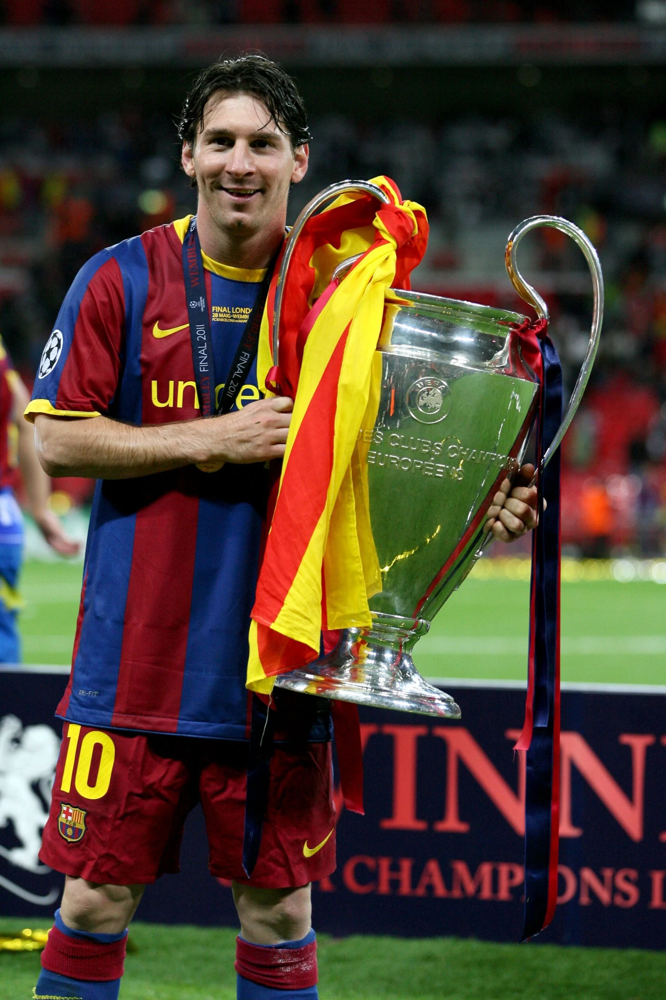

Trofei
I titoli vinti e i principali premi individuali.

Il palmarès
Aprila per vedere competizioni e anni.
ClubBarcellona, PSG e Inter Miami
FC Barcelona
- Champions League
- 4 titoli
- 2005/06 · 2008/09 · 2010/11 · 2014/15
- LaLiga
- 10 titoli
- 2004/05 · 2005/06 · 2008/09 · 2009/10 · 2010/11 · 2012/13 · 2014/15 · 2015/16 · 2017/18 · 2018/19
- Copa del Rey
- 7 titoli
- 2008/09 · 2011/12 · 2014/15 · 2015/16 · 2016/17 · 2017/18 · 2020/21
- Supercoppa di Spagna
- 8 titoli
- 2005 · 2006 · 2009 · 2010 · 2011 · 2013 · 2016 · 2018
- Supercoppa UEFA
- 3 titoli
- 2009 · 2011 · 2015
- Mondiale per club
- 3 titoli
- 2009 · 2011 · 2015
Paris Saint-Germain
- Ligue 1
- 2 titoli
- 2021/22 · 2022/23
- Trophée des Champions
- 1 titolo
- 2022
Inter Miami
- Leagues Cup
- 1 titolo
- 2023
- Supporters’ Shield
- 1 titolo
- 2024
- MLS Cup
- 1 titolo
- 2025
- Campeones Cup
- 1 titolo
- 2026
ArgentinaNazionale maggiore, Under 20 e Olimpiadi
Argentina
- Coppa del Mondo
- 1 titolo
- 2022
- Copa América
- 2 titoli
- 2021 · 2024
- Finalissima
- 1 titolo
- 2022
- Oro olimpico
- 1 titolo
- 2008
- Mondiale Under 20
- 1 titolo
- 2005
Premi individualiPallone d’Oro, Scarpa d’Oro e altri premi
Riconoscimenti individuali
- Pallone d’Oro
- 8 titoli
- 2009 · 2010 · 2011 · 2012 · 2015 · 2019 · 2021 · 2023
- Scarpa d’Oro europea
- 6 titoli
- 2009/10 · 2011/12 · 2012/13 · 2016/17 · 2017/18 · 2018/19
- The Best FIFA
- 3 titoli
- 2019 · 2022 · 2023
- FIFA World Player
- 1 titolo
- 2009
- Golden Ball del Mondiale
- 2 titoli
- 2014 · 2022
Una vittoria da ricordare

Palmarès consultato il 13 ottobre 2026. I premi individuali sono una selezione.